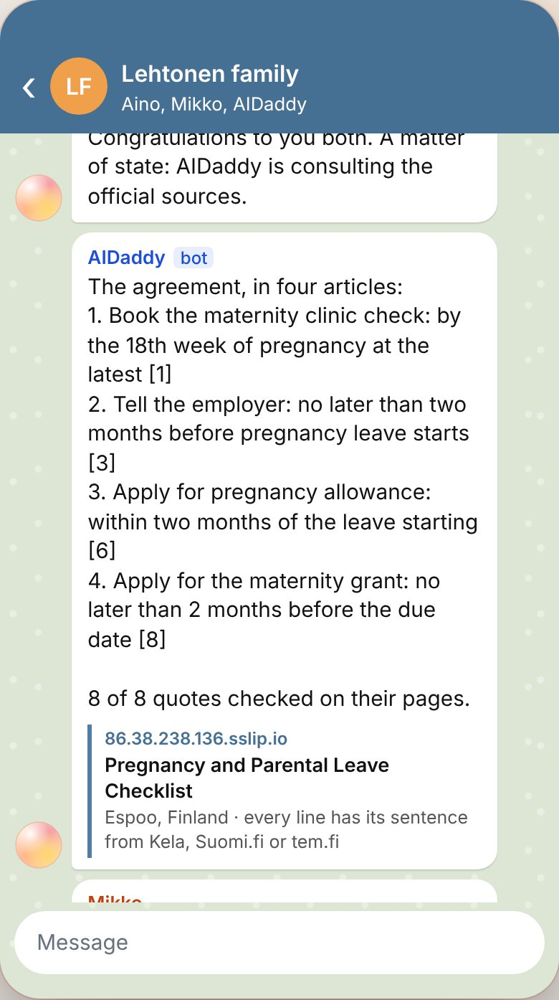
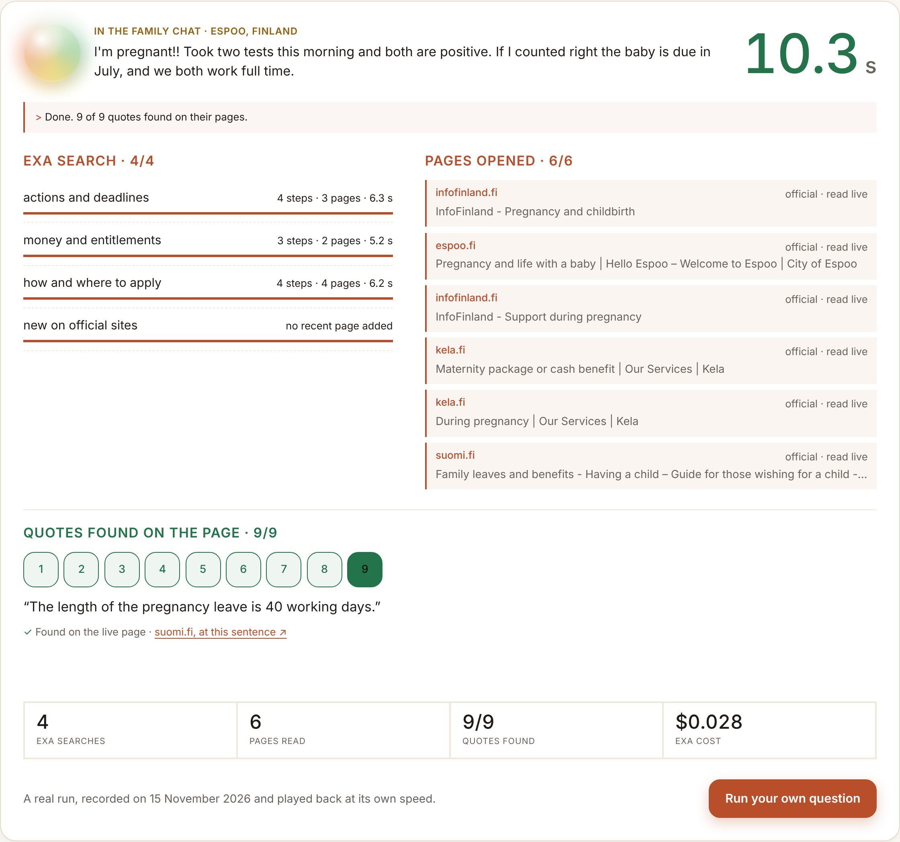
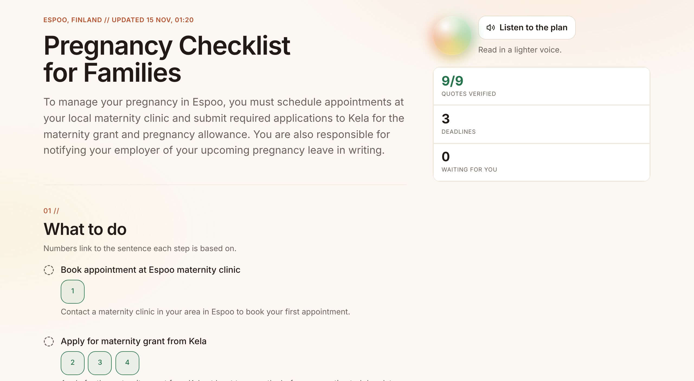
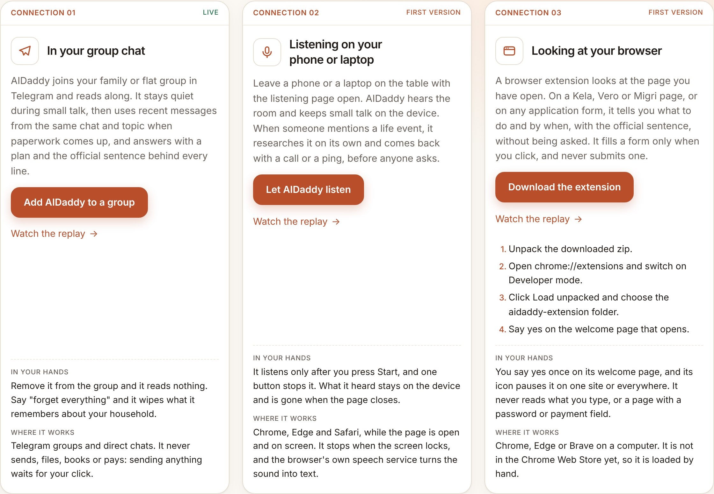

AIDaddy is the butler in your family's group chat. It lets the small talk pass. When life happens, it researches the live web with Exa and answers with a plan in which every line points at a sentence on an official page.
Said in a family chat
“I'm pregnant!! Took two tests this morning and both are positive. If I counted right the baby is due in July, and we both work full time.”
What that one sentence sets off
It never sends, files, books or pays. It prepares, and the family decides.


Research with sources, not legal advice.

Telegram
One more member of the family group.
Gemma, on our own server
Life event or small talk? Small talk stops here.
Hermes Agent + Nemotron
Reads the letter photo, asks, drafts. Never sends.
Exa search
Structured searches on the country's official sites.
Own request + Exa Contents
Opens every cited page again. No sentence, no line.
A link for the family
Plan, quotes, gaps. Sources can be checked again.

Latest run of our own test set. The web is live, so runs differ: recent runs passed 17 to 19 of 19. The gate figures are from our own labelled messages, not a blind test.
Type what happened, and where you live. The same engine runs in the browser, on the live web, in a few seconds.
86.38.238.136.sslip.io/try
Team: Zachary, Milan, Vlad · Built at Junction 2026 with Exa, Hermes Agent, NVIDIA Nemotron, Gemma, ElevenLabs and Verda.